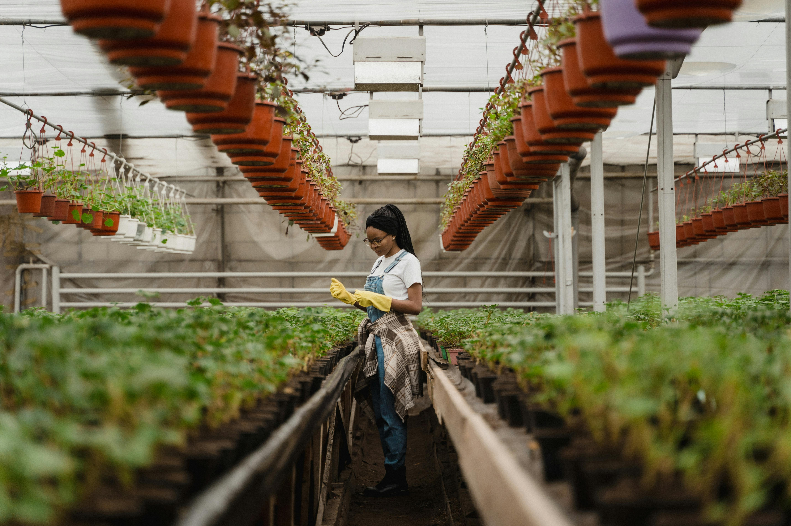
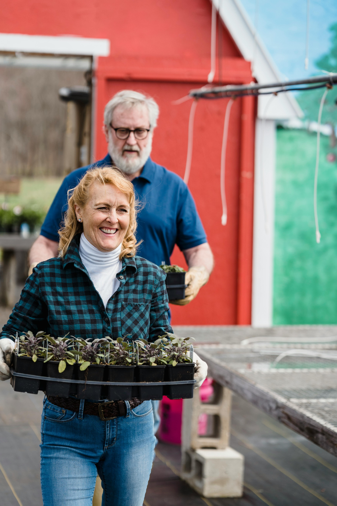
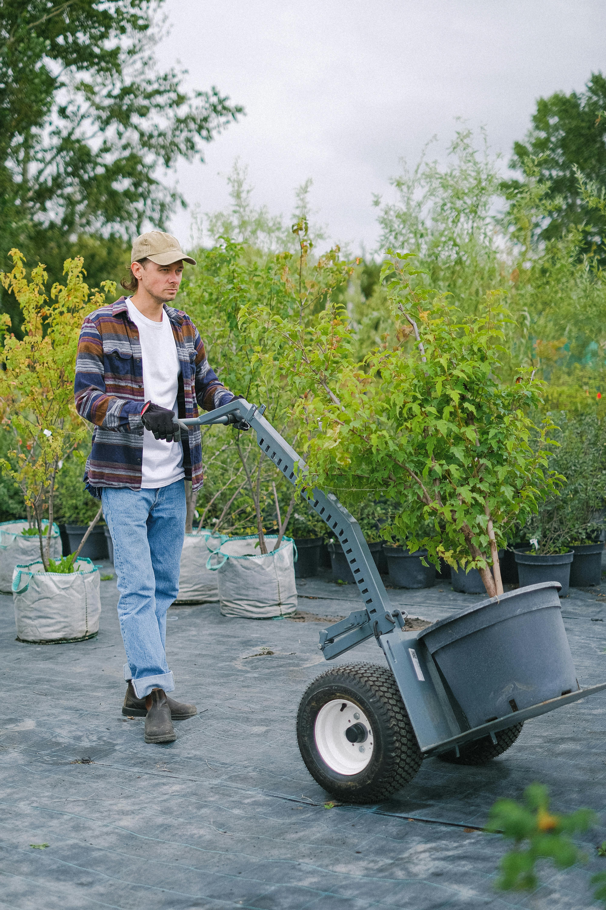

La historia de Pelusa
En el corazón del Chaco indómito, bajo el sol que besa la tierra roja, nació Pelusa. Desde niño, sus manos inquietas no jugaban con bolitas ni remontaban barriletes como otros. Su fascinación residía en el silencio verde que brotaba de la tierra, en la danza sutil de las hojas al viento, en el milagro silencioso de una semilla que se abría paso a la vida. Pelusa creció con el aroma húmedo de la tierra después de la lluvia, con el canto de las chicharras como banda sonora de sus exploraciones botánicas en los montes cercanos. Aprendió los nombres secretos de cada yuyo, el lenguaje silencioso de los árboles centenarios, los caprichos de las flores silvestres. Su amor por las plantas no era un pasatiempo, era una extensión de su ser, una conexión visceral con la esencia misma de su tierra. El año 1975 marcó un hito en la vida de Pelusa. Con el tesón propio de la gente del Chaco y el apoyo incondicional de su compañera de vida, levantó las primeras estructuras de lo que sería su legado: un vivero. No era un simple negocio, era la materialización de su pasión, un rincón donde compartir la belleza y los secretos del mundo vegetal con su comunidad. Con el correr de los años, el vivero de Pelusa floreció al igual que sus plantas. El aroma de las flores se mezclaba con las risas de sus hijos, quienes crecieron entre macetas y tierra fértil, absorbiendo el amor por la naturaleza como si fuera aire. Aprendieron los secretos del injerto, la paciencia de la germinación, la dedicación del cuidado. Hoy, aquel pequeño emprendimiento de 1975 es un testimonio vivo de la pasión transmitida de generación en generación. Pelusa, con sus manos curtidas por el tiempo y la tierra, observa con orgullo a sus hijos continuar su obra junto a su esposa. El vivero no solo ofrece una inmensa variedad de plantas, sino también la historia de una familia chaqueña cuyo amor por la vida verde echó raíces profundas, trascendiendo el tiempo y las generaciones, floreciendo con la misma fuerza que la tierra que los vio nacer.



Puedes conocer más sobre nuestro trabajo en el siguiente link:
nuestra carpeta"AMOR DE GENERACION EN GENERACION.